Mensen staan centraal in het grootste deel van mijn fotografie. Dit is een verzameling beelden die mijn benadering van portretfotografie laat zien — breed, eerlijk en altijd in samenwerking met het onderwerp.
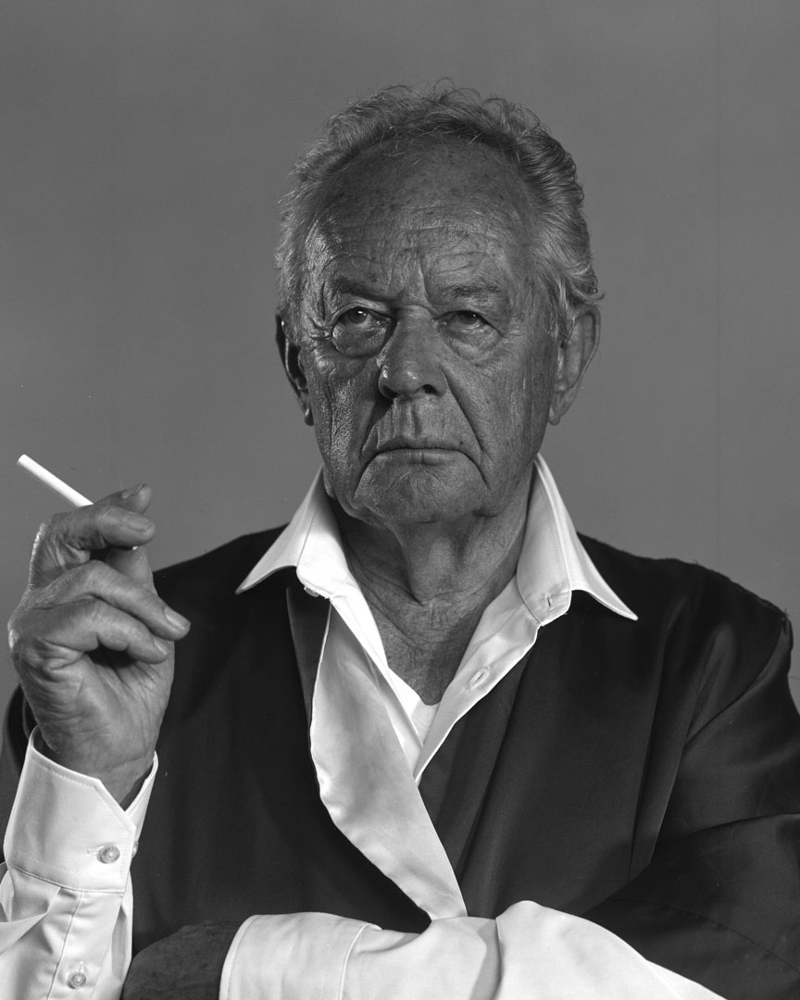
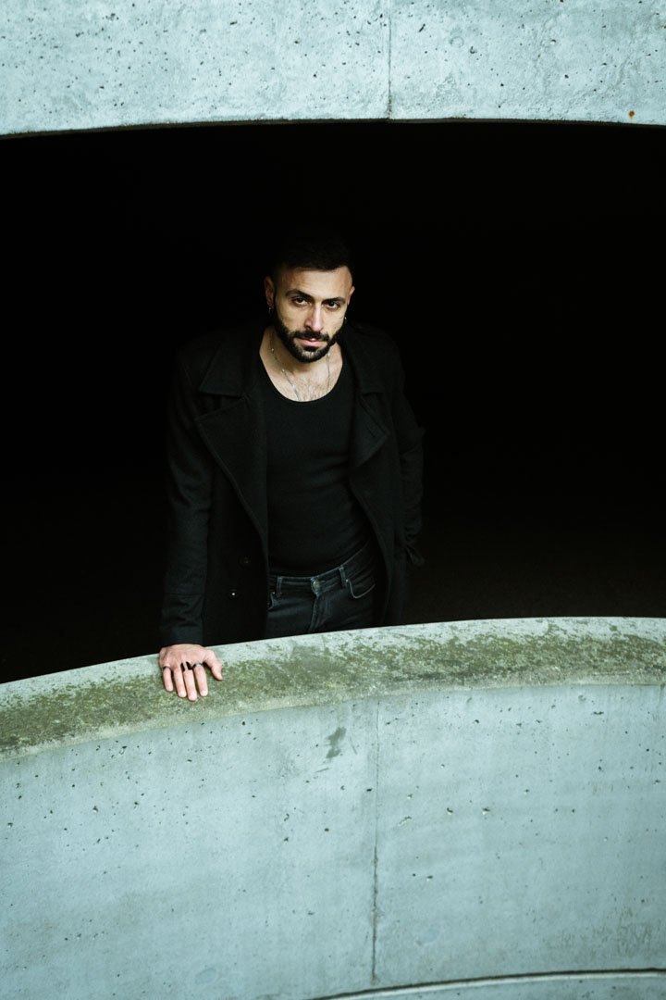
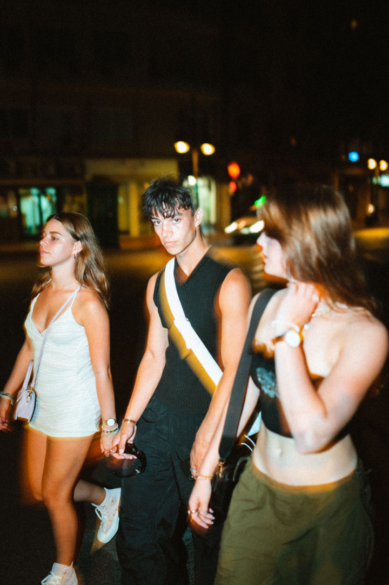
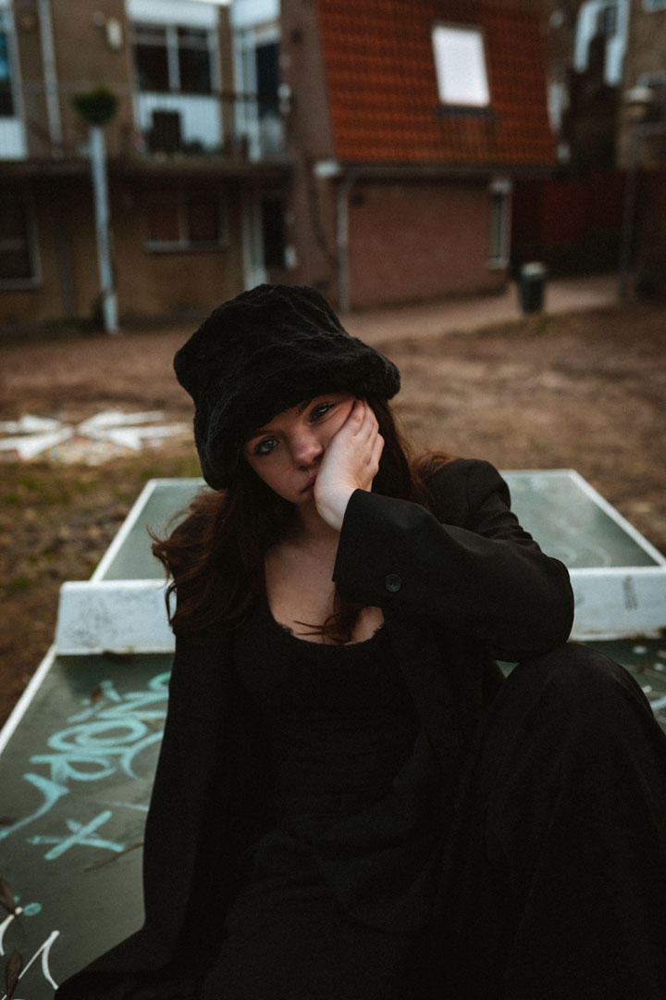
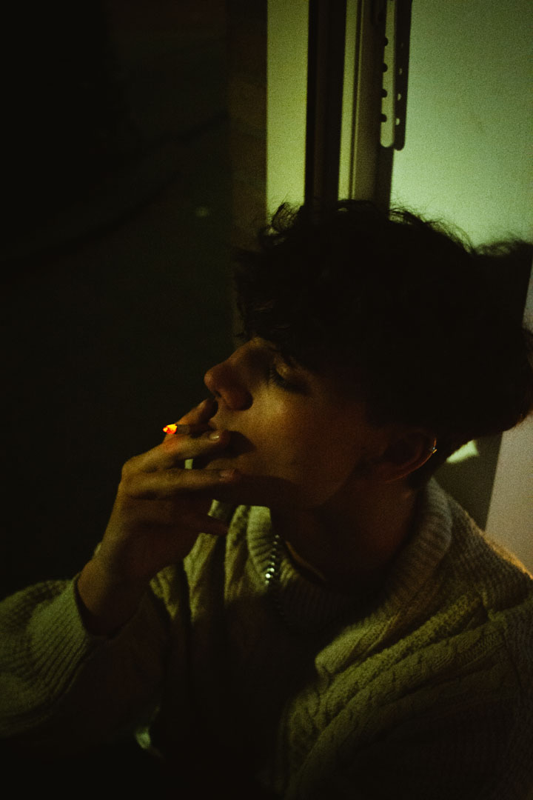
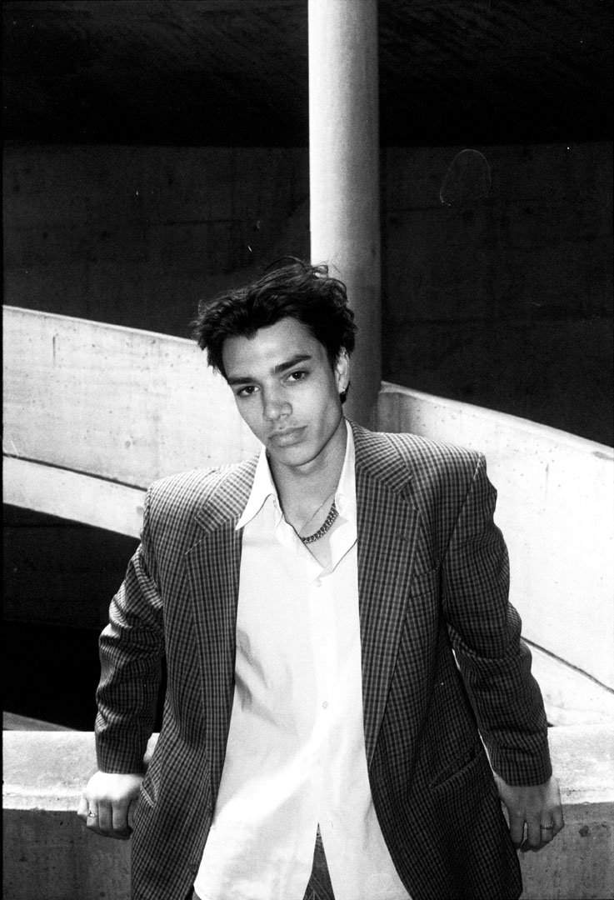
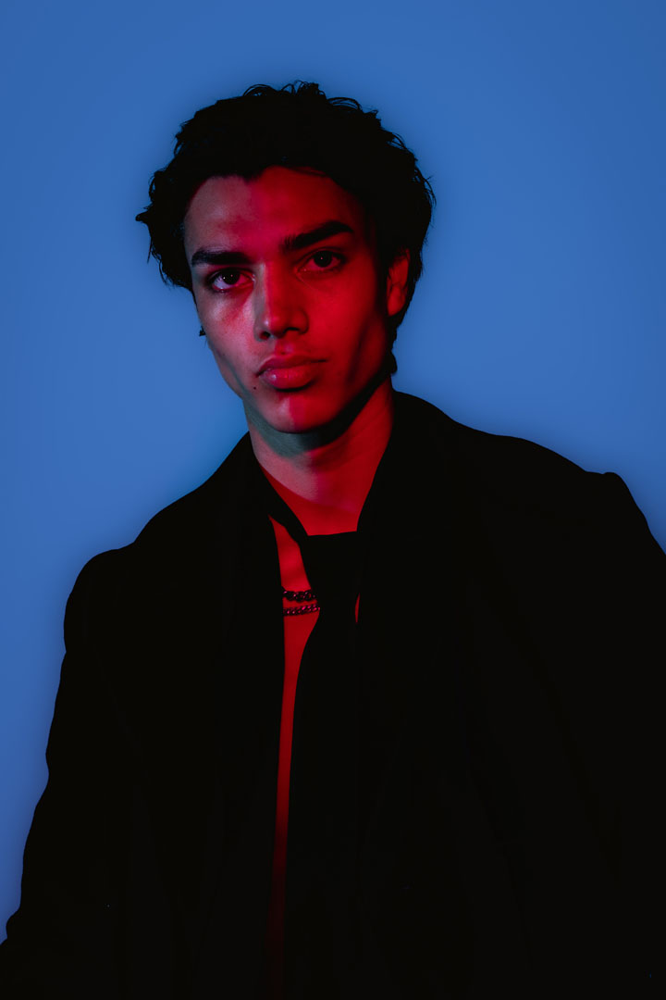
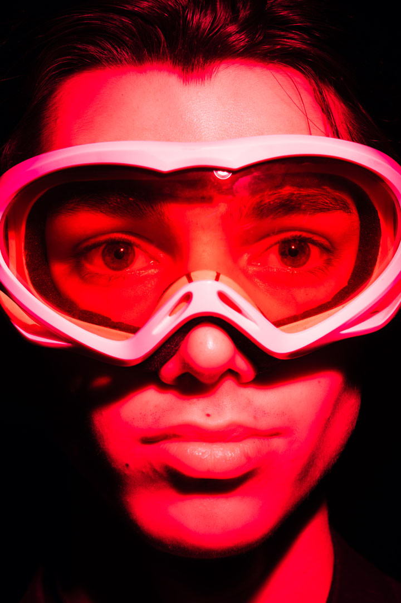
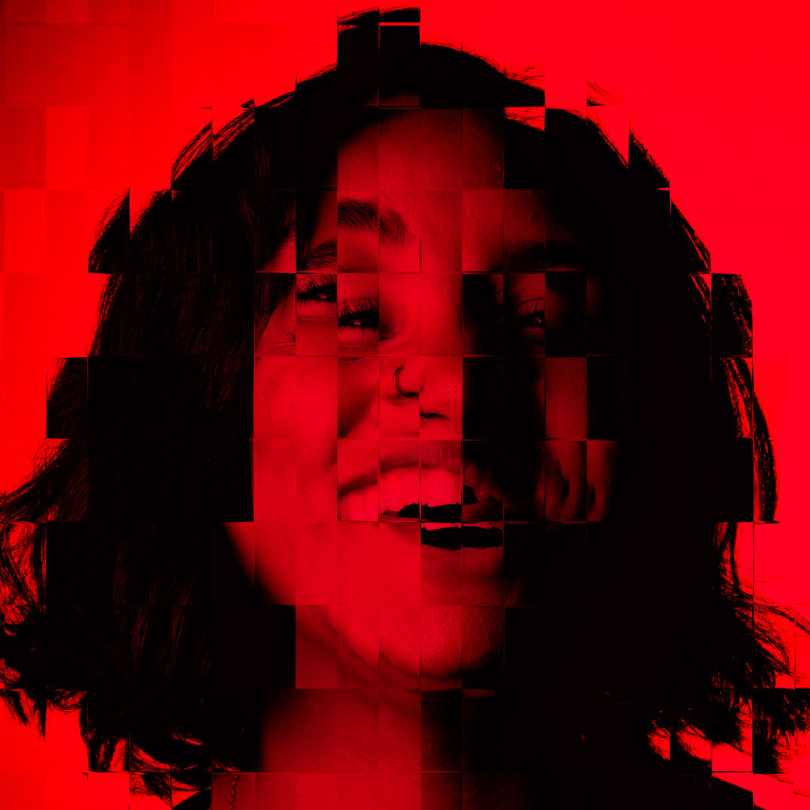
De werkwijze verschilt per persoon. Ik werk graag samen met mijn onderwerpen en zoek naar wat oprecht aanvoelt — persoonlijkheid en esthetiek vastleggen op een manier die authentiek is.
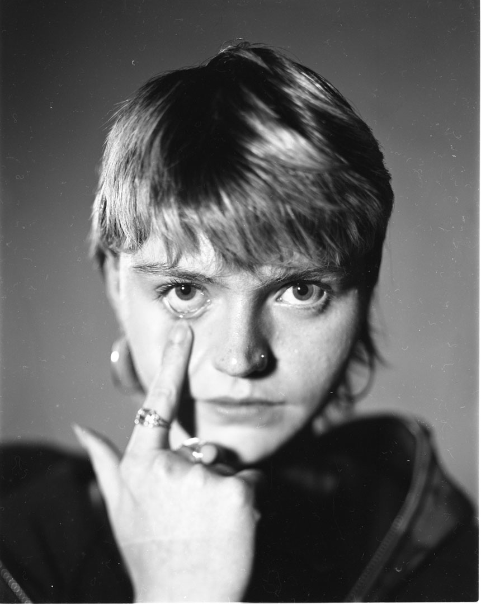
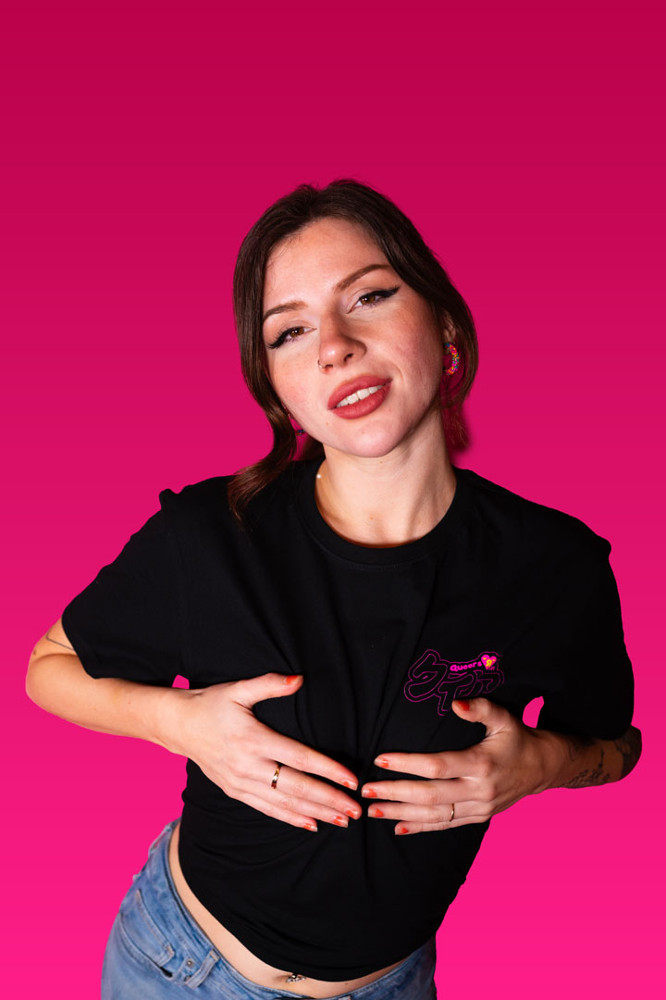
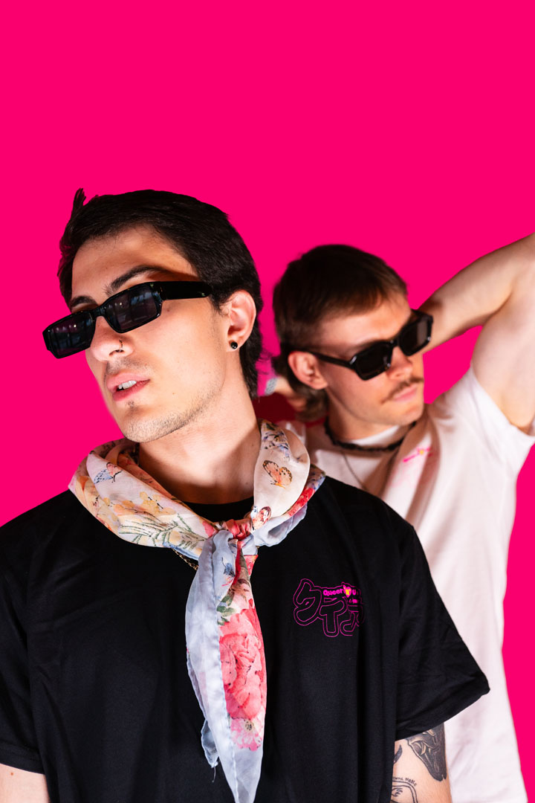
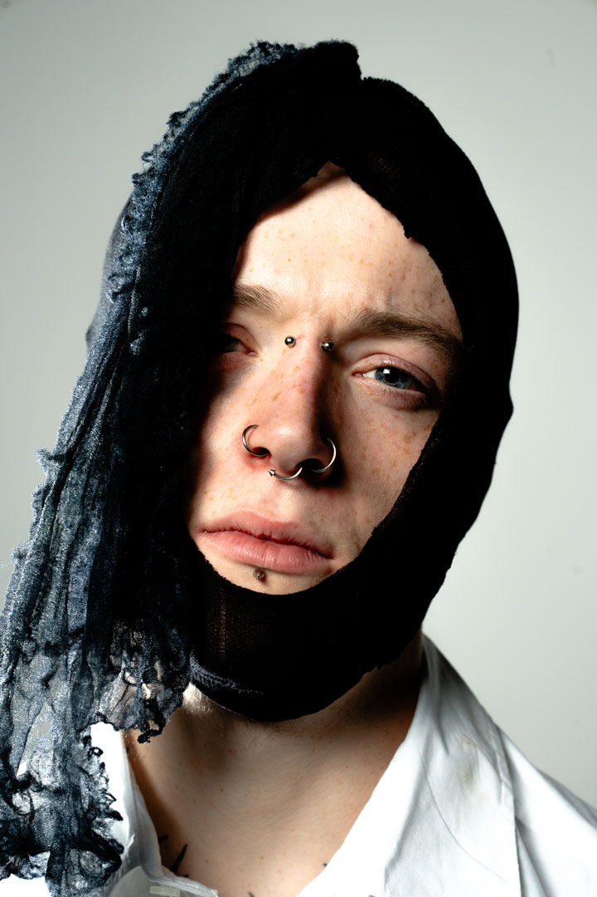